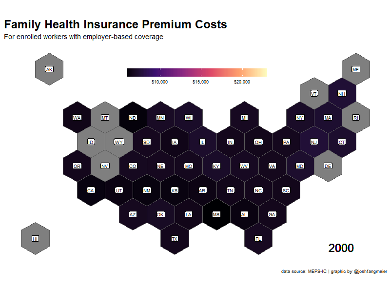

library(tidyverse)
library(rvest)
#devtools::install_github("dmi3kno/polite")
library(polite)
library(httr)
library(gganimate)
library(sf)
library(viridis)
library(gt)
#devtools::install_github("hadley/emo")
library(emo)Politely Scraping Health Insurance Data
webscraping
rvest
polite
gganimate
gt

Health insurance benchmark data
In the United States, about half of the population has health insurance coverage through an employer. With employer-sponsored health insurance having such a large role in the American health care system, it’s important to understand trends and variation over time and how that affects affordability for employers, workers, and their family members.
One of the longest running surveys of employer-sponsored coverage is the Medical Expenditure Panel Survey - Insurance Component (MEPS-IC), administered by the federal Agency for Healthcare Research and Quality. Since the late 1990s, the MEPS-IC has asked employees and their employers about the health benefits offered to employees and what benefits employees enroll into, making it a valuable source of benchmark and trend data.
A significant challenge with MEPS-IC data is that it is stored in separate web pages for each measure and year, with separate point estimate and standard error tables on each page. For this project, I am going to scrape the data from a subset of MEPS-IC tables using appropriate techniques and then visualize the trend data.
Let’s get to it and load the R packages.
Web scraping and the polite package
To scrape the data from the MEPS-IC website, I’m going to use the polite package, developed by Dmytro Perepolkin and co-authors. This package uses three principles of polite webscraping: seeking permission, taking slowly and never asking twice. Specifically, it manages the http session, declares the user agent string and checks the site policies, and uses rate-limiting and response caching to minimize the impact on the webserver.
Applying the three principles of polite scraping, polite creates a session with bow, requests a page with nod, and pulls the contents of the page with scrape. Here is a brief example:
session <- bow("https://meps.ahrq.gov/", force = TRUE)
session<polite session> https://meps.ahrq.gov/
User-agent: polite R package
robots.txt: 13 rules are defined for 1 bots
Crawl delay: 5 sec
The path is scrapable for this user-agentpage <-
nod(bow = session,
path = paste0("data_stats/summ_tables/insr/national/",
"series_1/2019/tia1.htm"))
page<polite session> https://meps.ahrq.gov/data_stats/summ_tables/insr/national/series_1/2019/tia1.htm
User-agent: polite R package
robots.txt: 13 rules are defined for 1 bots
Crawl delay: 5 sec
The path is scrapable for this user-agentscrape_page <-
page %>%
scrape(verbose=TRUE)
scrape_page{html_document}
<html xmlns="http://www.w3.org/1999/xhtml" lang="en">
[1] <head>\n<meta name="description" content="2019 Insurance Component Summar ...
[2] <body>\r\n<center>\r\n<table cellspacing="0" border="0" cellpadding="3" c ...Creating a table of contents of the insurance data
The first step for scraping the MEP-IC pages is to generate a table of content of all of the webpages. To do this, I use polite to go through each of the pages in the MEPS-IC table of contents and append the results of each page together, using a while loop. I also use the rvest package to pull specific nodes from each page, including the table and a link to the next page.
## Table of contents
toc_df <- tibble()
session <- bow("https://meps.ahrq.gov/", force = TRUE)
## State and metro tables
path <- paste0("quick_tables_results.jsp?component=2&subcomponent=2",
"&year=-1&tableSeries=-1&tableSubSeries=&searchText=&",
"searchMethod=1&Action=Search")
index <- 0
while(!is.na(path)){
# make it verbose
index <- 1 + index
message("Scraping state/metro page: ", path)
# nod and scrape
current_page <-
nod(bow = session,
path = paste0("data_stats/", path)) %>%
scrape(verbose=TRUE)
# extract post titles
toc_df <- current_page %>%
html_nodes(xpath = paste0('//*[contains(concat( " ", @class, " " ),',
' concat( " ", "description", " " ))]',
'//table')) %>%
html_table(fill = TRUE) %>%
purrr::pluck(5) %>%
as_tibble() %>%
janitor::clean_names() %>%
bind_rows(toc_df)
# see if a "Next" link is available
if (index == 1){
path <- current_page %>%
html_node(".boxGreyNoBorder div a") %>%
html_attr("href")
} else {
path <- current_page %>%
html_node(".boxGreyNoBorder a+ a") %>%
html_attr("href")
}
} # end while loop
## National tables
path <- paste0("quick_tables_results.jsp?component=2&subcomponent=1&",
"year=-1&tableSeries=-1&tableSubSeries=&searchText=&",
"searchMethod=1&Action=Search")
index <- 0
while(!is.na(path)){
# update index
index <- 1 + index
message("Scraping national page: ", path)
# nod and scrape
current_page <-
nod(bow = session,
path = paste0("data_stats/", path)) %>%
scrape(verbose=TRUE)
# extract TOC tables
toc_df <- current_page %>%
html_nodes(xpath = paste0('//*[contains(concat( " ", @class, " " ),',
'concat( " ", "description", " " ))]//table')) %>%
html_table(fill = TRUE) %>%
purrr::pluck(5) %>%
as_tibble() %>%
janitor::clean_names() %>%
bind_rows(toc_df)
# see if a "Next" link is available
if (index == 1){
path <- current_page %>%
html_node(".boxGreyNoBorder div a") %>%
html_attr("href")
} else {
path <- current_page %>%
html_node(".boxGreyNoBorder a+ a") %>%
html_attr("href")
}
}# end while loopAfter scraping the table of contents data, I prep it further and generate the set of URL links I will need to pull the specific data tables I plan to use for this project.
toc <-
toc_df %>%
select(-update) %>%
separate(title,
into = c("title", "year"),
sep = ": United States,",
convert = TRUE) %>%
mutate(year = as.numeric(substr(str_squish(year), 1, 4)),
number = str_remove(table_no, "Table ")) %>%
separate(number,
into = c("series", "number"),
sep = '\\.',
convert = TRUE,
extra = "merge") %>%
filter(!is.na(year)) %>%
mutate(number = str_remove_all(number, "[:punct:]"),
number = str_to_lower(paste0("t", series, number)),
series = as.numeric(as.roman(series)),
url = case_when(
series %in% c(1, 3, 4, 11) ~ paste0("https://meps.ahrq.gov/data_stats/",
"summ_tables/insr/national/series_",
series, "/",
year, "/",
number, ".htm"),
TRUE ~ paste0("https://meps.ahrq.gov/data_stats/",
"summ_tables/insr/state/series_",
series, "/",
year, "/",
number, ".htm")
)) %>%
filter(!is.na(year) & !is.na(series) & !is.na(number))Tidying the scraped data with the tidyverse
The result is a list object with a length of the number of pages scraped.
class(family_prem_res)[1] "list"length(family_prem_res)[1] 19With a little bit of rvest and purrr you can see a preview of the table in the webpage, but the results are very messy, with extra columns, blank rows, and offset values.
family_prem_res %>%
purrr::pluck(1) %>%
read_html() %>%
html_nodes(xpath = '/html/body/table[1]') %>%
html_table(fill = TRUE, header = FALSE) %>%
as.data.frame() %>%
tibble()# A tibble: 59 x 18
X1 X2 X3 X4 X5 X6 X7 X8 X9 X10 X11 X12 X13
<chr> <chr> <chr> <chr> <chr> <chr> <chr> <chr> <chr> <chr> <chr> <chr> <chr>
1 "Tab~ "Tab~ "Tab~ "Tab~ "Tab~ "Tab~ "Tab~ "Tab~ "Tab~ "Tab~ "Tab~ "Tab~ "Tab~
2 "" "" "" "" "" "" "" "" "" "" "" "" ""
3 "Div~ "Tot~ "" "Les~ "" "10 ~ "" "25 ~ "" "100~ "" "100~ ""
4 "Div~ "Tot~ "" "Les~ "" "10 ~ "" "25 ~ "" "100~ "" "100~ ""
5 "" "" "" "" "" "" "" "" "" "" "" "" ""
6 "Uni~ "6,7~ "" "6,9~ "" "6,8~ "" "6,6~ "" "6,6~ "" "6,8~ ""
7 "New~ "New~ "New~ "New~ "New~ "New~ "New~ "New~ "New~ "New~ "New~ "New~ "New~
8 "Mas~ "7,3~ "" "8,4~ "" "8,2~ "" "7,4~ "" "7,0~ "" "7,0~ ""
9 "New~ "7,5~ "" "8,2~ "" "7,3~ "" "7,7~ "" "6,9~ "" "7,6~ ""
10 "Con~ "7,2~ "" "7,5~ "" "7,6~ "" "7,1~ "" "7,9~ "" "7,0~ ""
# ... with 49 more rows, and 5 more variables: X14 <chr>, X15 <chr>, X16 <chr>,
# X17 <chr>, X18 <chr>To fix the table and transform it to a shape that is better for visualization, I created a function that processes each scraped result and puts it into a tidier format (long, not wide). Some highlights of this function include:
Testing different xpaths to find the data table in the page. Over time, the MEPS-IC tables changed in their format and styling, so the pages do not have a consistent structure.
Apply a hierarchy of group categories, groups, and segments.
Pull the point estimate and standard error data tables separately and combine them at the end.
Use the
janitorpackage to remove empty rows and columns and rename variables from row values.Use the
zoopackage to fill in blank values from above rows.Convert all percentages to decimal values.
seriesScraper <- function(resp) {
if (resp %>%
purrr::pluck(1) %>%
read_html() %>% #test to find the right node
html_nodes(xpath = '/html/body/center/table[1]') %>%
html_table(fill = TRUE, header = FALSE) %>%
as.data.frame() %>%
ncol() > 0) {
node <- "/html/body/center/table"
} else if (resp %>%
purrr::pluck(1) %>%
read_html() %>% #test to find the right node
html_nodes(xpath = '/html/body/table[1]') %>%
html_table(fill = TRUE, header = FALSE) %>%
as.data.frame() %>%
ncol() > 0) {
node <- "/html/body/table"
} else {
node <- "/html/body/div/table"
}
string_filter <- paste(
"\\_\\_",
"Source:",
"Note:",
"Table I",
"Table II",
"Table 1",
"Table 2",
"\\* Figure",
"\\*\\* Definitions",
"Totals may",
"Dollar amounts",
"\\*Figure",
"Definitions",
"No estimate",
"These cell",
"States not",
sep = "|"
)
url <-
resp %>%
purrr::pluck(1) %>%
purrr::pluck("url")
if (is.null(url)){
url <-
resp %>%
purrr::pluck(1)
}
pt_ests <-
resp %>%
purrr::pluck(1) %>%
read_html() %>%
html_nodes(xpath = paste0(node, "[1]")) %>%
html_table(fill = TRUE, header = FALSE) %>%
as.data.frame() %>%
na_if("") %>%
distinct() %>%
filter(X1 != "District of Columbia" &
X2 != "District of Columbia") %>%
mutate_at(vars(-X1), ~ ifelse(!is.na(X1) &
is.na(.), X1, .)) %>%
mutate(X1 = ifelse(is.na(X1) & !is.na(X2), "group", X1)) %>%
janitor::remove_empty("rows") %>%
mutate_all( ~ str_replace_all(., "[\r\n]" , "")) %>%
mutate_all( ~ str_squish(str_remove(., "\\*\\*"))) %>%
mutate_all( ~ replace(., str_detect(., "These cell"), NA)) %>%
filter(!str_detect(.[[1]], string_filter)) %>%
janitor::remove_empty(c("rows", "cols")) %>%
distinct() %>%
janitor::row_to_names(
row_number = 1,
remove_row = TRUE,
remove_rows_above = TRUE
) %>%
subset(select = which(!duplicated(names(.)))) %>%
subset(select = which(!is.na(names(.)))) %>%
mutate(
group_category = ifelse(.[[1]] == .[[2]], .[[1]], NA),
group_category = zoo::na.locf(group_category, na.rm = FALSE),
group_category = ifelse(is.na(group_category), "United States", group_category)
) %>%
filter(!.[[1]] == .[[2]]) %>%
rename(group = 1) %>%
pivot_longer(
cols = -starts_with("group"),
names_to = "segment",
values_to = "pt_est"
) %>%
mutate_if(is.factor, as.character)
std_errs <-
resp %>%
purrr::pluck(1) %>%
read_html() %>%
html_nodes(xpath = paste0(node, "[2]")) %>%
html_table(fill = TRUE, header = FALSE) %>%
as.data.frame() %>%
na_if("") %>%
distinct() %>%
filter(X1 != "District of Columbia" &
X2 != "District of Columbia") %>%
mutate_at(vars(-X1), ~ ifelse(!is.na(X1) &
is.na(.), X1, .)) %>%
mutate(X1 = ifelse(is.na(X1) & !is.na(X2), "group", X1)) %>%
janitor::remove_empty("rows") %>%
mutate_all( ~ str_replace_all(., "[\r\n]" , "")) %>%
mutate_all( ~ str_squish(str_remove(., "\\*\\*"))) %>%
mutate_all( ~ replace(., str_detect(., "These cell"), NA)) %>%
filter(!str_detect(.[[1]], string_filter)) %>%
janitor::remove_empty(c("rows", "cols")) %>%
distinct() %>%
janitor::row_to_names(
row_number = 1,
remove_row = TRUE,
remove_rows_above = TRUE
) %>%
subset(select = which(!duplicated(names(.)))) %>%
subset(select = which(!is.na(names(.)))) %>%
mutate(
group_category = ifelse(.[[1]] == .[[2]], .[[1]], NA),
group_category = zoo::na.locf(group_category, na.rm = FALSE),
group_category = ifelse(is.na(group_category), "United States", group_category)
) %>%
filter(!.[[1]] == .[[2]]) %>%
rename(group = 1) %>%
pivot_longer(
cols = -starts_with("group"),
names_to = "segment",
values_to = "std_err"
) %>%
mutate_if(is.factor, as.character) %>%
select(-group_category)
inner_join(pt_ests,
std_errs,
by = c("group", "group_category", "segment")) %>%
mutate(url = url) %>%
mutate(numeric = case_when(
str_detect(pt_est, "[A-Za-z]") ~ 0,
str_detect(std_err, "[A-Za-z]") ~ 0,
TRUE ~ 1
)) %>%
filter(numeric == 1) %>%
mutate(
pt_est = str_trim(str_remove_all(pt_est, "\\*"), side = "both"),
std_err = str_trim(str_remove_all(std_err, "\\*"), side = "both"),
pt_est = if_else(
str_detect(pt_est, "%"),
as.numeric(gsub("%", "", pt_est)) / 100,
as.numeric(gsub(",", "", pt_est))
),
std_err = if_else(
str_detect(std_err, "%"),
as.numeric(gsub("%", "", std_err)) / 100,
as.numeric(gsub(",", "", std_err))
)
) %>%
select(-numeric) %>%
janitor::remove_empty(c("cols", "rows")) %>%
mutate(
series = parse_number(str_extract(url, "series_[:digit:]{1,2}")),
year = parse_number(str_extract(url, "[:digit:]{4}")),
table = str_remove(str_extract(url, "[:alnum:]{2,12}.htm"), ".htm")
) %>%
filter(!is.na(pt_est) & !is.na(std_err)) %>%
mutate_if(is.character, ~ str_remove(., "\\:$"))
}With this new function, I used purrr::map_dfr to apply it to each scraped page in the list object and append all the resulting tidy data frames together.
family_prem_df <- map_dfr(family_prem_res, seriesScraper)head(family_prem_df)# A tibble: 6 x 9
group group_category segment pt_est std_err url series year table
<chr> <chr> <chr> <dbl> <dbl> <chr> <dbl> <dbl> <chr>
1 United States United States Total 6772. 19.6 http~ 2 2000 tiid1
2 United States United States Less tha~ 6994. 149 http~ 2 2000 tiid1
3 United States United States 10 - 24 ~ 6860. 143. http~ 2 2000 tiid1
4 United States United States 25 - 99 ~ 6628. 78.4 http~ 2 2000 tiid1
5 United States United States 100-999 ~ 6606. 52.3 http~ 2 2000 tiid1
6 United States United States 1000 or ~ 6817. 37.7 http~ 2 2000 tiid1Visualizing family premium costs
For the family premium cost data, I want to generate a map to show how costs increase across states over time. For the state map, I’m going with a hexmap of states from Carto. To make all the hexagons the same size, I transformed the data to a Mercator projection. I also created a crosswalk of state names and abbreviations to join the data together.
hex_map <- st_read(file.path(path_to_data, "us_states_hexgrid.geojson"))Reading layer `us_states_hexgrid' from data source
`C:\Users\Josh\Dropbox\Projects\meps-ic\polite\us_states_hexgrid.geojson'
using driver `GeoJSON'
Simple feature collection with 51 features and 7 fields
Geometry type: POLYGON
Dimension: XY
Bounding box: xmin: -137.9747 ymin: 26.39343 xmax: -69.90286 ymax: 55.3132
Geodetic CRS: WGS 84state_abb <-
tibble(
name = state.name,
abb = state.abb
) %>%
bind_rows(
tibble(
name = "District of Columbia",
abb = "DC"
)
)
#transform to mercator projection
hex_map_merc <- st_transform(hex_map, crs = 3785)
hex_map_merc %>%
ggplot() +
geom_sf()
The next step is to prep the family premium data with the map. I used the tidyr::complete function to add missing values for any states that did not have data for a particular year. This is most common in the earlier years of the survey. I then used gganimate to created an animated gif showing the changes in premium costs across states.
family_prem_map_df <-
family_prem_df %>%
filter(segment == "Total") %>%
select(year, group, pt_est, std_err) %>%
tidyr::complete(year, group) %>%
inner_join(
state_abb, by = c("group" = "name")
) %>%
inner_join(
hex_map_merc, by = c("abb" = "iso3166_2")
) %>%
select(
abb,
year,
pt_est,
std_err,
geometry
)
family_prem_anim <-
family_prem_map_df %>%
ggplot() +
geom_sf(aes(fill = pt_est, geometry = geometry)) +
scale_fill_viridis_c(
option = "magma",
na.value = "grey50",
aesthetics = "fill",
labels = scales::dollar
) +
geom_sf_label(aes(label = abb, geometry = geometry),
color = "black",
size = 3,
label.padding = unit(0.15, "lines")) +
geom_text(aes(x = -8400000, y = 3200000, label = paste0(year)),
size = 8,
color = 'black') +
theme_bw() +
theme(plot.title = element_text(face = "bold", hjust = 0, size = 24),
plot.subtitle = element_text(size = 14),
panel.border = element_blank(),
panel.spacing = unit(3, "lines"),
panel.grid = element_blank(),
axis.ticks = element_blank(),
axis.text = element_blank(),
axis.title = element_blank(),
legend.key.width = unit(4, "lines"),
legend.position = c(0.50, 0.85),
legend.direction = "horizontal",
legend.title = element_blank()) +
labs(
title = 'Family Health Insurance Premium Costs',
subtitle = 'For enrolled workers with employer-based coverage',
caption = 'data source: MEPS-IC | graphic by @joshfangmeier',
x = '',
y = ''
) +
transition_states(year,
transition_length = 4, state_length = 3) +
ease_aes('cubic-in-out')You can see which states have had higher and lower premium costs. Alaska 🤯.

Scraping data on insurance coverage by industry
The next part of this project is to compare health insurance trends by industry. To do this, I scraped and tidied data from five sets of tables on the number of establishments, the number of workers, enrollment rates, and deductible levels for single (employee-only) health insurance.
## Coverage Rates by Industry
enrollment_url_vctr <-
toc %>%
filter(number %in% c("tia1", "tib1", "tib2", "tib2b", "tif2"),
year >= 2000) %>%
pull(url)
enrollment_res <- map(enrollment_url_vctr, polite_GET)
enrollment_df <- map_dfr(enrollment_res, seriesScraper)Comparing variation in deductibles across industries
I then prepped the data a little further and calculated the number of enrolled employees for each industrial sector, using other values from the survey. I also plotted the trends in employee deductibles from 2000 to 2019 for each of the sectors.
enrollment_ind_df <-
enrollment_df %>%
filter(group_category == "Industry group" & segment == "Total") %>%
mutate(group = case_when(
group == "Fin. svs. and real est." ~ "Fin. svs. and real estate",
group == "Other Services" ~ "Other services",
TRUE ~ group)) %>%
filter(group != "Unknown") %>%
select(year, group, pt_est, table, year) %>%
pivot_wider(names_from = table, values_from = pt_est) %>%
mutate(enrolled_employees = tib1 * tib2 * tib2b) %>%
select(year,
industry = group,
establishments = tia1,
employees = tib1,
enrolled_employees,
average_employee_deductible = tif2) %>%
filter(!is.na(average_employee_deductible))enrollment_ind_df %>%
ggplot(aes(x = year, y = average_employee_deductible)) +
geom_line() +
geom_hline(yintercept = 0.5) +
facet_wrap(~industry)
Creating a table to display industry variation
Instead of creating another animated gif, I decided to use the gt package to generate a table that contained the information I wanted to display. Thomas Mock has an excellent guide for creating high quality tables with gt that I highly recommend. He includes a section on how to implement plots in your table, so you can have numbers and visuals in your table together. In this case, I am going to create a line graph or spark plot to display the deductible trends, by creating a function to generate the plots.
plot_spark <- function(data){
data %>%
mutate(color = "blue") %>%
ggplot(aes(x = year, y = average_employee_deductible, color = color)) +
geom_line(size = 15) +
theme_void() +
scale_color_identity() +
theme(legend.position = "none")
}
deductible_plots <- enrollment_ind_df %>%
select(industry, year, average_employee_deductible) %>%
nest(deductibles = c(year, average_employee_deductible)) %>%
mutate(plot = map(deductibles, plot_spark))For some added fun, I’m adding emojis that represent each of the industrial sectors. Hadley Wickham’s emo package makes it very easy to add emoji values.
emoji <- tribble(
~industry, ~emoji,
"Agric., fish., forest.", emo::ji("man_farmer"),
"Mining and manufacturing", emo::ji("woman_factory_worker"),
"Construction", emo::ji("construction_worker_man"),
"Utilities and transp.", emo::ji("bus"),
"Wholesale trade", emo::ji("ship"),
"Fin. svs. and real estate", emo::ji("dollar"),
"Retail trade", emo::ji("department_store"),
"Professional services", emo::ji("woman_health_worker"),
"Other services", emo::ji("man_artist")
)Using Mock’s guide for gt tables, I then setup my new table with the embedded plots using the text_transform function and the data frame with the plots I created earlier. With gt, you can also easily add spanners, format the values in your columns, and change the font styling and background colors to create the look you want.
enrollment_spark <-
enrollment_ind_df %>%
filter(year == 2019) %>%
inner_join(emoji, by = "industry") %>%
select(emoji,
industry,
establishments,
employees,
enrolled_employees,
average_employee_deductible) %>%
rename_all(~str_to_title(str_replace_all(., "\\_", " "))) %>%
mutate(ggplot = NA) %>%
gt() %>%
text_transform(
locations = cells_body(vars(ggplot)),
fn = function(x){
map(deductible_plots$plot,
ggplot_image,
height = px(20),
aspect_ratio = 4)
}
) %>%
cols_width(vars(ggplot) ~ px(100)) %>%
cols_label(
ggplot = "Employee Deductibles:\n2000-2019",
Emoji = "",
) %>%
fmt_number(3:5, decimals = 0) %>%
fmt_currency(6, decimals = 0) %>%
tab_spanner(
label = "2019 Private Sector Charactertics, USA",
columns = c(3:6)
) %>%
tab_style(
style = cell_text(color = "black", weight = "bold"),
locations = list(
cells_column_spanners(everything()),
cells_column_labels(everything())
)
) %>%
tab_options(
row_group.border.top.width = px(3),
row_group.border.top.color = "black",
row_group.border.bottom.color = "black",
table_body.hlines.color = "white",
table.border.top.color = "white",
table.border.top.width = px(3),
table.border.bottom.color = "white",
table.border.bottom.width = px(3),
column_labels.border.bottom.color = "black",
column_labels.border.bottom.width = px(2),
) %>%
tab_source_note(md("**Source**: MEPS-IC | **Table by**: @joshfangmeier"))
enrollment_spark